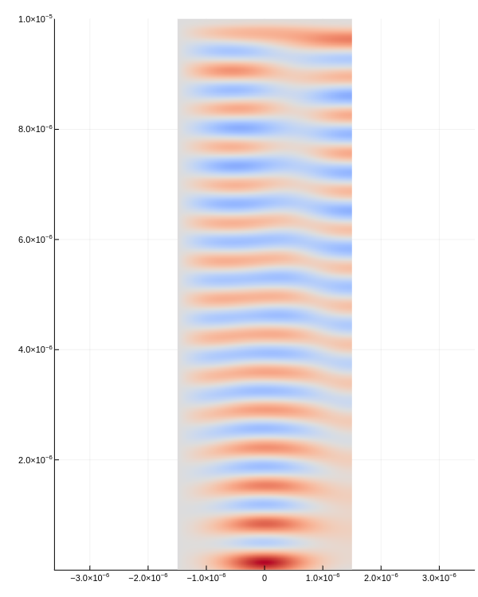

FieldDistributionNonuniformMedium
Documentation for FieldDistributionNonuniformMedium.
Installation
The package can be installed with the Julia package manager. From the Julia REPL, type ] to enter the Pkg REPL mode and run:
pkg> add https://github.com/foldfelis/FieldDistributionNonuniformMedium.jlQuick start
julia> using FieldDistributionNonuniformMedium
julia> s = Simulator();
julia> simulate!(s);
julia> plot_e_field(s)
Index
FieldDistributionNonuniformMedium.GridFieldDistributionNonuniformMedium.LightFieldDistributionNonuniformMedium.PermeabilityFieldDistributionNonuniformMedium.PermittivityFieldDistributionNonuniformMedium.SimulatorFieldDistributionNonuniformMedium.implant!FieldDistributionNonuniformMedium.simulate!
APIs
FieldDistributionNonuniformMedium.Grid — MethodGrid(max_x, max_y, max_t, nx, ny)Construct a discretization grid for computational domain.
Arguments
max_x: Linear sizes of first computational domain in meters.max_y: Linear sizes of second computational domain in meters.max_t: Maximum computational time in seconds.nx: Number of discretization grid for first computational domain.ny: Number of discretization grid for second computational domain.
Example
julia> Grid(3e-6, 10e-6, 1e-12, 60, 200);FieldDistributionNonuniformMedium.Light — MethodLight(λ)Construct a light to propagate.
Arguments
λ: Wavelength of the light in meters.
Example
julia> Light(2.04e-6);FieldDistributionNonuniformMedium.Permeability — MethodPermeability(μ_const::Real, grid::Grid)Construct a uniform permeability for the medium.
Arguments
μ_const: Permeability of the medium in N/A².grid: Discretization grid.
Example
julia> grid = Grid(3e-6, 10e-6, 1e-12, 60, 200);
julia> Permeability(1., grid);FieldDistributionNonuniformMedium.Permittivity — MethodPermittivity(ϵ_const::Real, grid::Grid)Construct a uniform permittivity for the medium.
Arguments
ϵ_const: Permittivity of the medium in F/m.grid: Discretization grid.
Example
julia> grid = Grid(3e-6, 10e-6, 1e-12, 60, 200);
julia> Permittivity(9., grid);FieldDistributionNonuniformMedium.Simulator — MethodSimulator(grid::Grid, light::Light, permittivity::Permittivity, permeability::Permeability)Arguments
grid: Discretization grid for computational domain.light: Light to propagate.permittivity: Permittivity for the medium.permeability: Permeability for the medium.
Example
```jldoctest julia> grid = Grid(3e-6, 10e-6, 1e-12, 60, 200);
julia> light = Light(2.04e-6);
julia> permittivity = Permittivity(9., grid);
julia> permeability = Permeability(1., grid);
julia> Simulator(grid, light, permittivity, permeability);
FieldDistributionNonuniformMedium.implant! — Methodimplant!(
permittivity::Permittivity, ϵ_const::Real,
xs::AbstractVector, ys::AbstractVector, rs::AbstractVector,
grid::Grid
)Implant some bubble defect into the medium.
Arguments
permittivity: Permittivity object.ϵ_const: Permittivity of the defect in F/m.xs: Position of defect of first computational domain in meters.ys: Position of defect of second computational domain in meters.rs: Radius of defect in meters.grid: Discretization grid.
Example
julia> grid = Grid(3e-6, 10e-6, 1e-12, 60, 200);
julia> permittivity = Permittivity(9., grid);
julia> ϵ_defect = 1.;
julia> xs_defect = [0, 1e-6, -1e-6];
julia> ys_defect = [1e-6, 2e-6, 3e-6];
julia> rs_defect = [0.5e-6, 0.1e-6, 0.2e-6];
julia> implant!(
permittivity, ϵ_defect,
xs_defect, ys_defect, rs_defect,
grid
);FieldDistributionNonuniformMedium.simulate! — Methodsimulate!(s::Simulator)Run simulation from current t to max_t
Arguments
s: Simulator.
Example
julia> grid = Grid(3e-6, 10e-6, 1e-12, 60, 200);
julia> light = Light(2.04e-6);
julia> permittivity = Permittivity(9., grid);
julia> permeability = Permeability(1., grid);
julia> s = Simulator(grid, light, permittivity, permeability);
julia> simulate!(s);